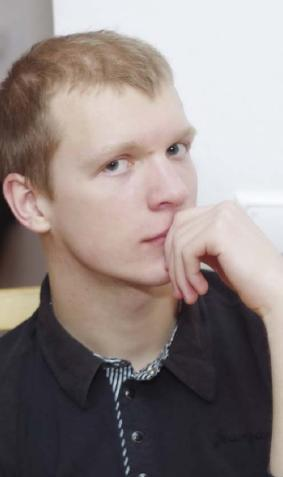
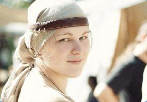
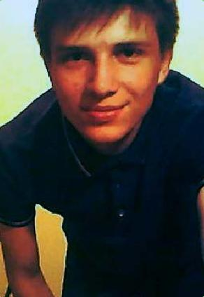
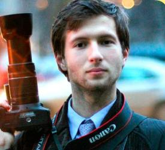

Date: Oct 10, 2013
Учеба не волк - в лес не убежит
В преддверии прошлой сессии мы поговорили с ребятами, которые успевают и учиться, и работать.
В декабре прошлого года я официально устроился в компанию ЧПТУП«Объединенная энергетическая компания».
Работаю техником-программистом,поскольку звание инженера-программиста присваивается только после получения высшего образования. В принципе, им нужен был специалист по работе с сайтом - начиная с изменения стиля компании в web-е и заканчивая обучением персонала в соответствующей области. Что писалось в трудовой - не имело значения,мог быть хоть начальником IT-отдела(Леша так шутит). Это у нас мало начто влияет – разве что на настроениеи чувство собственного достоинства.
Официально устроен на полставки. Сначала был огромный список необходимых для выполнения заданий, но прошло месяца два, и всё как-то утряслось. Сейчас в основном работаю дома, что радует. В офис приезжаю лишь по необходимости. А зарплата за такую работу - очень даже не плохая.Устроился на работу во время сессии: тогда было время ездить в офис. Путь в одну сторону занимал у меня около полутора часов. Сейчас бываю там, в среднем, раз в три недели.
Для меня приоритетнее учёба, ведь я уже на пятом курсе. Всё бросить - глупо. Но коль на работе дэдлайн - тут уж ничего не поделаешь, приходится прогуливать.
Я думаю, что моя сегодняшняя работа - это лишь ступень. Молодые мы ещё. Всё впереди. Много планов, много перспектив. Да и карьерный рост ведь никто не отменял.
Анна Морозова, 5-ый курс
Работаю техником-конструктором в исследовательском отделе ОАО«Пеленг», НКУ «Космос». После получения диплома планирую остаться здесь, но уже в качестве инженера - всё-таки это моя специальность (учусь на кафедре физики и аэрокос-мических технологий).
Занимаюсь расчетами и алгоритмами. Проекты разные – не надоедают. Устроена всего на 0,5 ставки (20часов в неделю), что позволяет легко совмещать работу с учебой. К тому же, это еще и выгодно.
Павел Григорик, 3-ий курс
Началось всё на каникулах, после зимней сессии. Было свободное время и желание заработать немного денег (они-то лишними никогда не бывают).
Мы вместе с другом решили найти работу. Согласны были практически на любую - только бы удобный график и хорошая зарплата.
Нашли подходящий магазин. Рабочий день - 18:00-2:00, шесть дней внеделю и один выходной. Должность,конечно, не лучшая - выставляем товар на полки в магазине, но если учесть, что мы еще студенты, и полного образования у нас нет, то вполне сносно.
Заработная плата неплохая - 420у.е. в месяц. Хорошие отношения сколлективом и начальством делают работу моментами даже интересной и приятной. Из минусов только то, что не хватало времени для сна. Приходилось кое-где подремать на лекциях, но мы привыкли - всего же уже 3 месяца работаем каждый день, точнее, - ночь.
На первом месте для меня, конечно же, университет - образование первым делом. Скоро близится сессия, нужно будет получать зачеты, закрывать хвосты, свободного времени станет меньше - будет уже сложнее совмещать учебу и работу. Поэтому планируем поработать до мая, а дальше полностью заняться учебными делами. Оказывается, стоит только захотеть – получится и работать, и учиться.
Иван Воробей, 2-ый курс
Фотография и видео всегда были для меня просто увлечением, ставшим теперь еще и прибыльным делом.
Сначала работал по предзаказам. Потом мне предложили заниматься компьютерным моделированием графических объектов – композингом – на МТИС (объединение минских телеканалов). Проработав там неделю, начал консультировать операторов.
После звонка директора проекта «Наше дело» (СТВ) стал видеооператором-видеоинженером, но по-прежнему занимался съемкой и композингом. Со второго семестра начал зарабатывать как фотограф-фрилансер. Успеваю всюду: будни - учеба,выходные – работа. Меня всё устраивает.